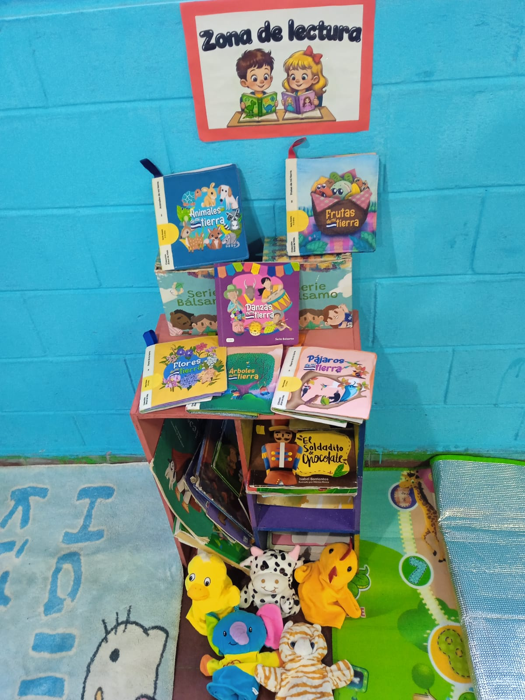
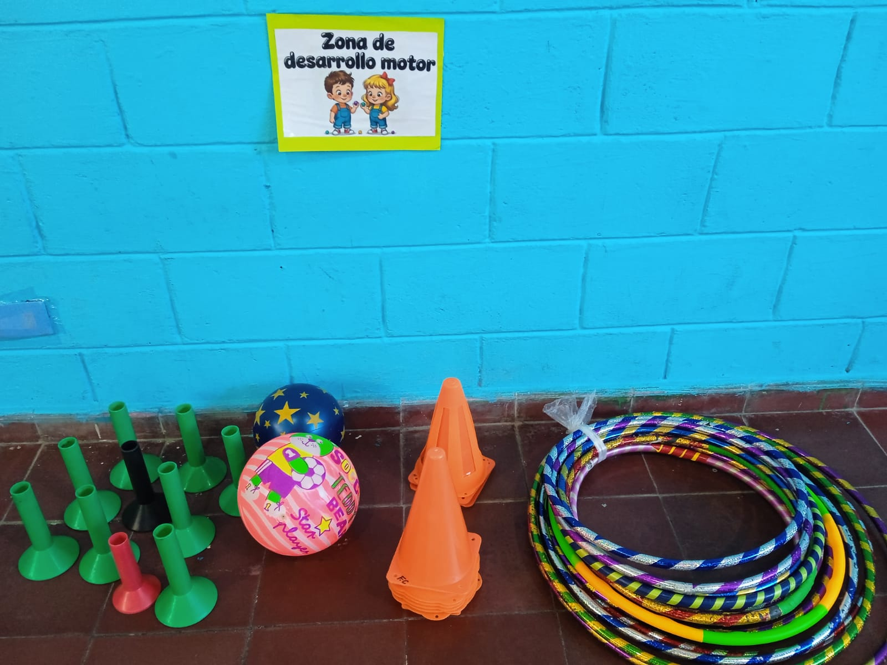
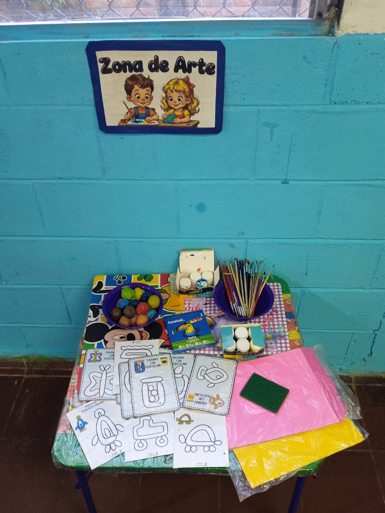
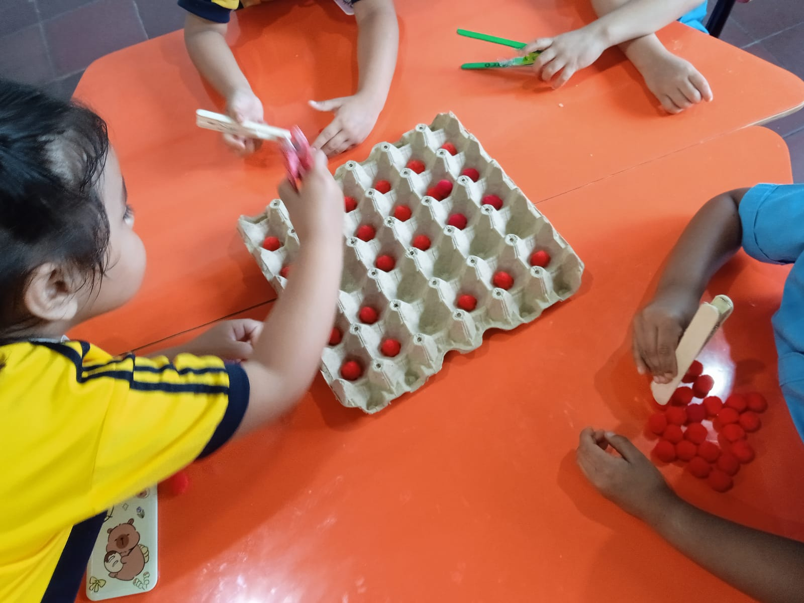

🎯 Propósito pedagógico
Mi objetivo principal fue crear un ambiente potenciador que respondiera a las necesidades e intereses de los niños, garantizando un espacio seguro, accesible y estimulante. Busqué que cada zona del aula no fuera únicamente un lugar físico, sino una oportunidad de aprendizaje intencionado.
Durante la planificación consideré aspectos fundamentales como la edad de los niños, la seguridad de los materiales y la organización del espacio, con el fin de promover la autonomía y la participación activa. Comprendí que cuando el ambiente está bien estructurado, los niños se involucran con mayor confianza y construyen aprendizajes más significativos.
📚 Zona de Lectura
En esta zona organicé materiales como libros de cuentos, libros de tela, fichas ilustradas y títeres, con el propósito de estimular el lenguaje y la imaginación. Me aseguré de que el espacio fuera cómodo y accesible para que los niños pudieran interactuar libremente con los recursos.
Durante la implementación observé que los niños inicialmente exploraban los libros a través de las imágenes, pero progresivamente comenzaron a construir relatos propios, compartir historias con sus compañeros y expresar ideas con mayor claridad. Esto me permitió confirmar que el lenguaje se fortalece cuando se brinda un ambiente adecuado y motivador.
Además, noté que la interacción entre ellos favoreció la comunicación espontánea, el respeto por turnos y la escucha activa, aspectos fundamentales en su desarrollo social.

🏃 Zona de Desarrollo Motor
Para esta zona utilicé un espacio amplio donde los niños pudieran moverse libremente. Incorporé materiales como pelotas, aros y conos, diseñando actividades que promovieran la coordinación, el equilibrio y la motricidad gruesa.
Durante las actividades observé que los niños disfrutaban correr, saltar y desplazarse, mostrando entusiasmo y energía. Estas experiencias no solo fortalecieron su desarrollo físico, sino también su confianza y seguridad en sus propios movimientos.
Comprendí que el movimiento es una necesidad fundamental en esta etapa, y que al integrarlo de manera planificada se convierte en una herramienta poderosa para el aprendizaje integral.

🎨 Zona de Artes Plásticas
En esta zona proporcioné materiales como pinturas, plastilina, crayones y papel, con la intención de fomentar la creatividad y la expresión artística. Permití que los niños exploraran sin restricciones, valorando el proceso más que el resultado final.
Observé cómo experimentaban con colores, formas y texturas, desarrollando habilidades motoras finas y al mismo tiempo expresando emociones e ideas. Algunos niños crearon figuras, otros combinaron colores, y todos participaron desde su propio ritmo.
Esta experiencia reafirmó mi comprensión de que el arte es un medio fundamental para el desarrollo emocional y cognitivo en la infancia.

🧪 Actividad Potenciadora
Diseñé una actividad utilizando materiales reciclados como cartones de huevo, pompones de colores y pinzas elaboradas con el apoyo de los padres. Observe que con esta actividad se fortalecio la coordinación ojo-mano, la concentración y la motricidad fina.
Durante la actividad, los niños comenzaron manipulando los pompones con sus manos, explorando su textura y color. Posteriormente, utilizaron las pinzas para colocarlos en los espacios del cartón, repitiendo la acción con interés y dedicación.
Esta experiencia me permitió observar cómo, a través de materiales simples, se pueden generar aprendizajes significativos. Además, evidenció la importancia de involucrar a la familia en el proceso educativo.
